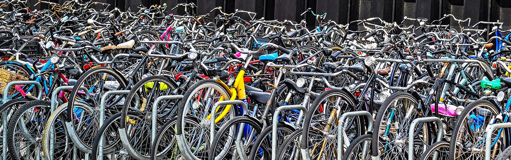

Pédale ta vie
Le webzine du vélo
Destination
Souce : Le vélo de montagne à Québec
| Centres | Sentiers | Remontée mécanique | Location de vélo |
|---|---|---|---|
| Souce : Le vélo de montagne à Québec | |||
| Mont-Sainte-Anne | 110 | Oui | Non |
| Empire 47 | 28 | Non | Oui |
| Vallée Bras-Du-Nord | 100 | Non | Non |
| Sentiers du Moulin | 40 | Non | Oui |
| Le massif de Charlevoix | 20 | Oui | Non |
Si vous êtes un adepte de vélo de montagne, vous avez assurément entendu parler des sentiers Neilson de la Vallée Bras-du-Nord. Et c’est aussi fort probable que vous ayez aperçu casquettes, t-shirts et autres accessoires arborant fièrement le mot «Neilson».
Ces sentiers ont acquis une renommée mondiale, de par leur qualité et aussi grâce aux panoramas époustouflants qu’ils permettent d’admirer.
Les pilotes les plus aguerris ainsi que les plus aventureux se lancent au moins une fois par année dans une journée baptisée « full Neilson », où il s'agit de rouler les sentiers Neilson Est, Nord et Sud en partant de l’accueil Shannahan.
Cet itinéraire assez costaud représente environ 32 km de vélo de montagne et plus de 1100 m de dénivelé, soit l’équivalent d’un petit raid dans un décor incroyable. À partir du piémont de la vallée Bras-du-Nord, ces sentiers vous feront parcourir une panoplie de paysages montagneux et forestiers, le fait saillant étant sans aucun doute le majestueux Cap des Sept Côtes bordant la rivière Neilson sur quelques kilomètres.
C’est dans cet esprit que le deuxième épisode de la série Ride Québec City a été conçu. En espérant qu’il vous donne l’envie d’aller rouler un « Full Neilson »!
© 2020 Madison Rivard